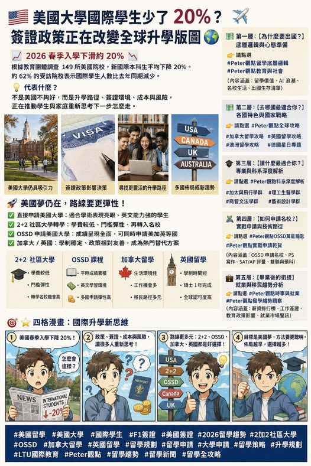

《看懂制度，選對世界》第一集
2026 春季美國大學國際學生少了 20%
簽證政策正在改變全球升學版圖 2026 年春季，根據 NAFSA 等國際教育組織參與發布的調查，149 所美國院校回報 2026 春季入學狀況，新國際本科生人數較去年同期平均下降約 20%；

【2026 春季 美國大學國際學生少了 20%】簽證政策正在改變全球升學版圖 2026 年春季，根據 NAFSA 等國際教育組織參與發布的調查，149 所美國院校回報 2026 春季入學狀況，新國際本科生人數較去年同期平均下降約 20%；約 62% 的受訪院校表示，國際學生人數較 2025 年春季減少。這代表什麼？請見以下分析 : F-1 學生簽證審查變得更敏感。家庭對政策變化產生觀望。學費與生活成本壓力升高。畢業後工作簽證與 H-1B 路線變數增加。加拿大、英國、澳洲開始成為更多學生的備選方案。
. 美國仍是熱門目的地，但家庭開始重新計算就讀風險 長期以來，美國大學擁有強大的品牌、研究資源、就業市場與校友網絡。對許多亞洲家庭而言，美國仍然象徵著世界級大學、科技產業、商管機會與高階職涯發展。可是，當環境友善、簽證審查、入境政策、學費成本、畢業後工作安排都變得更難預測，家長與學生開始擔心： 「如果目標不一定是美國，我是否還有更安全、更彈性的留學國家？」 這一次春季入學下滑，反映的也許是轉向加拿大、英國、澳洲、歐洲納入備案。. 為什麼 20% 下滑值得重視？
春季入學通常規模比秋季小，但它常被視為後續秋季招生的觀察指標。如果春季數字已經出現明顯下滑，代表大學端、仲介端、學生端都已感受到政策與心理層面的變化。對美國大學而言，國際學生通常支付較高學費，是許多學校重要收入來源。若國際學生減少，部分院校可能面臨招生壓力、財務壓力與課程規模調整。. Peter觀點：美國夢的規劃方式要更聰明。過去很多家庭習慣用單一路線思考：高中畢業後直接申請美國四年制大學。但現在更適合採用「多路徑升學策略」： 第一條路，是直接申請美國大學。
第二條路，是透過 OSSD、AP、IB 等國際課程提高申請彈性。第三條路，是先走美國社區大學 2+2，再轉入四年制大學。第四條路，是先選加拿大或英國，再依學生表現與科系方向調整。這才是現在國際升學規劃的重點。目標可以是美國，但路線未必只有一條。. 2+2 社區大學轉學，可能重新受到重視 所謂 2+2，通常是學生先在社區大學完成前兩年基礎課程，再轉入四年制大學完成後兩年學位。這條路線的優勢在於： 學費相對較低。入學門檻較有彈性。學生有時間適應美國學術環境。轉學時可用大學成績重新證明自己。
部分州內轉學制度成熟，路徑較容易規劃。對於英文程度正在成長、預算需要控制、或高中成績尚未完全展現實力的學生，2+2 會是值得評估的方案。. OSSD 申請美國大學：重點在於成績呈現與學術銜接 OSSD 加拿大安大略省高中課程，對於申請美國大學也有一定價值。原因在於 OSSD 採用 對台灣學生來說，OSSD 的優勢包括： 可銜接加拿大、美國、英國、澳洲等多國申請。適合把升學目標保留在多個國家之間。
如果學生原本鎖定美國，但家長擔心政策變化，OSSD 可以讓學生同時保留加拿大、英國與美國選項，避免把所有風險集中在單一國家。. 加拿大與 英國，會成為更多家庭的替代方案 加拿大的優勢在於學制接近北美、移民與工作路線過去相對受到重視，且多數台灣家庭對加拿大安全、生活環境與教育品質接受度高。英國的優勢則是學制時間較短，大學通常三年完成，碩士多為一年，整體時間成本較可控。對希望快速完成學位、進入職場或銜接研究所的學生，英國仍具吸引力。澳洲、歐洲、亞洲英語授課學程，也會在這一波變化中得到更多關注。
全球升學已經進入「多國佈局」時代。. 總結 美國國際學生春季入學下滑約 20%，這是一個重要提醒。美國夢還在。名校吸引力還在。科技、商管、研究資源仍然強大。但對今天的學生來說，最重要的已經不是單押某一個國家，而是建立能進、能轉、能退、能比較的升學策略。
第三部 加拿大：申請、就業與移民政策
制度是地圖，選擇才是方向。